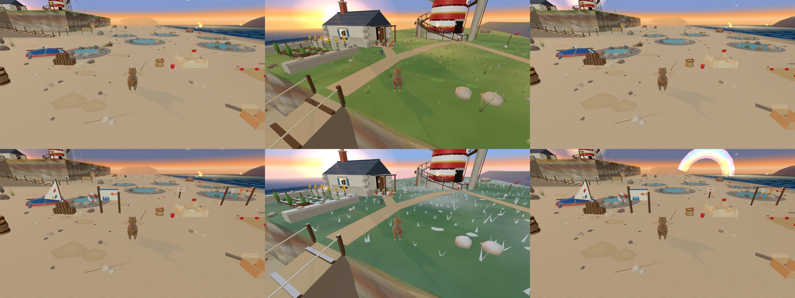

PLAY camera, tools/verify/verify-lighthouse.html (shots lb4_*; ?season=winter, ?wonder=rainbow). Top row BEFORE (pass 3), bottom row AFTER. Column one: the arrival beach (a harbour post with a painted board and a red-and-white lifebuoy, a patched sail by the upturned boat, a crab sign at the pools, a drying rack with fish and striped socks; the evening sky takes the autumn grade for today's date). Column two: a SEASONAL shot, the keeper's lawn in winter (frost on the rocks and the grass tips, cold blue light, the lamp's warm window). Column three: a SURPRISE shot, the rainbow over the north-east sea (the rare moment that one walk in three can have; others are dolphins, the northern lights, lightning).
